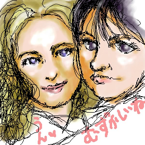
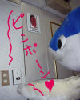

◀
…
59
60
61
62
63
64
▶
■2003/06/23/(Mon)17:28
t.A.T.u来日記念

せっかくのアプレットなので使ってみまひた。
ゆがんでるとか、マダラだとか言いっこなしで、薄目＆優しい目で見てやってください。
ちなみに私はユーリャが好きでふ。
t.A.T.uファンサイト
t.A.T.u萌え画像＆Flash
■2003/06/22/(Sun)17:15
タグ使えました
ところで、この日記CGIは私が知る限りでは非常に有能です。
設置は床の間にダルマ置くぐらい簡単です。
めちゃめちゃ有ぅ〜能ぅ〜なところは画像ファイル添付がめちゃ楽なのと、カスタマイズがWeb上からできるのとペイント系Javaアプレットが使えるぅぅぅ〜のです。
シンプルなのも私的にぐーです。
Dialy CGI nicky!
あ、上の写真は意味ありません。
けどあんまりだとおもいます。ブッシュ。
■2003/06/21/(Sat)16:43
テストかきこみ

サバ〜。
街がサバ臭くなると夏だなぁと思うわたしです。
海沿い勤務＆居住するとそんな情緒たっぷしの感覚で季節がわかります。
焼き鯖寿司
おいしそうです。
関あじ関サバまつり
関サバはサバの味ではありません。
関サバの味です。
四月馬鹿の魚
ポワソン・ダブリルとゆーケーキです。
鯖型（？）です。
この時期バカスカ獲れるので鯖は四月馬鹿の魚と
言われているそーで…。
あータグ使えるのかなぁ…
◀
…
59
60
61
62
63
64
▶